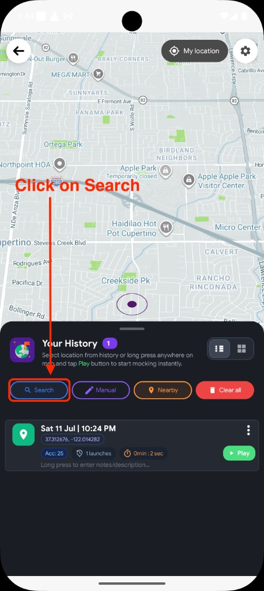
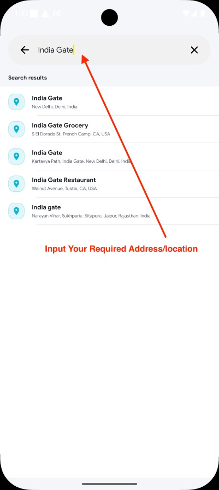
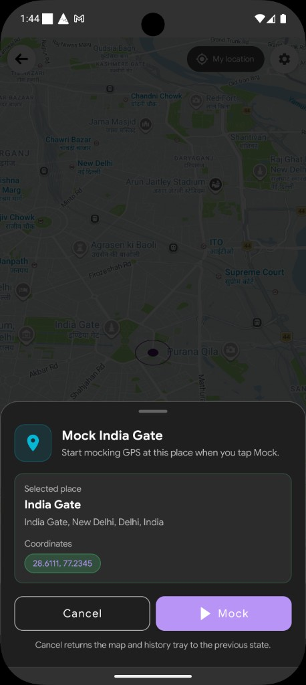
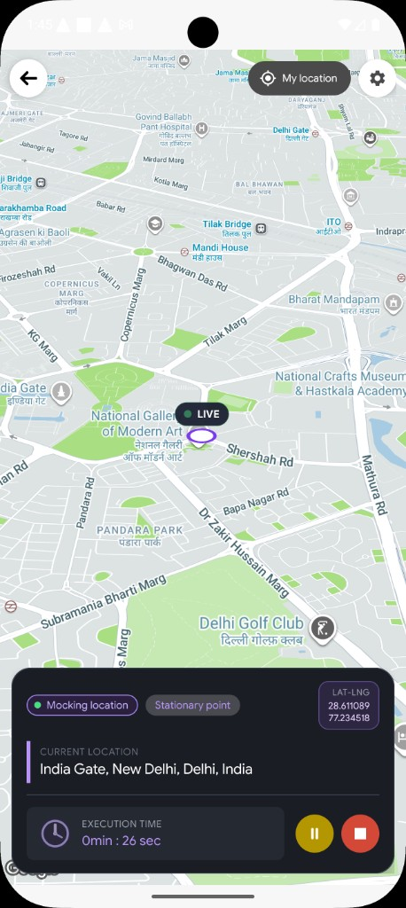

When Search is the right choice
Search is ideal when you already know what the place is called — a business name, landmark, or full address — but do not want to hunt for it by dragging the map.
-
Named places
Restaurants, hospitals, offices, airports, and other places that show up by name.
-
Addresses
Street addresses and known locations you can type faster than zooming on the map.
-
Recent picks
Places you selected before appear under Recent searches for one-tap reuse.
Quick comparison: Use Search for names and addresses. Use Nearby to browse categories around your map pin. Use Manual when you already have exact latitude and longitude. Use a long press when you can see the spot on the map.
Before you begin
Checklist
- Developer options enabled and Mock Loc selected as your mock location app. Setup guide →
- Internet connection — Search needs the network to look up places.
- No mock already running — stop any active stationary session first; Search is ignored while playback is active.
How Search works — step by step
From the Mock Loc home screen, open Stationary Pointer. In the history tray action row, tap the Search chip. A full-screen search page opens with a field that says Search here.

Start typing a place name or address. After two characters, Mock Loc looks up suggestions. While it works you may see Searching places..., then a list of matching results. Tap the place you want — if needed, Mock Loc briefly shows Fetching place details... before returning to the map.

A bottom sheet titled Mock [place name] shows the selected place and its coordinates. Tap Mock to start. Tap Cancel if you picked the wrong place — the map and history tray go back to how they were.

Mock Loc saves the place to your stationary history (if it is new), starts the player, and keeps reporting those coordinates until you tap Stop from the player bar or notification.

Cancel vs tap outside the sheet
- Cancel — undoes the selection and restores the previous map and tray.
- Tap outside the sheet — keeps the place on the map and shows a floating pin with a Play button so you can start mocking later.
What happens after you tap Mock
Mock Loc saves the place to your stationary history (if it is new), starts the stationary player, and keeps reporting those coordinates to other apps until you stop.
While mocking is running
- The map marker pulses to show the active mock.
- The history tray hides so the map stays clear.
- Use the player bar or the notification to Stop.
- Other apps read the mocked coordinates, not your physical location.
Quick tips
Get better results
- Type clearly — two or more characters are required before search runs.
- Use recent searches — previously selected places appear at the top when the field is empty.
- Pick a different spot than where you stand — if the place matches your real GPS, Mock Loc may refuse to simulate it.
- Stop other mocks first — Search will not open a new session while stationary playback is already running.
Troubleshooting
Search does nothing when I tap it
Stop any active stationary mock first. Search is disabled while a player session is already running.
No places found
Try another spelling or a shorter keyword. Check that you are online. The empty state message is: Try another keyword or check the spelling.
Other apps still show my real location
Confirm Mock Loc is selected under Developer options → Select mock location app, and that you tapped Mock (not only Cancel). Force-close the other app and reopen it after the mock starts.